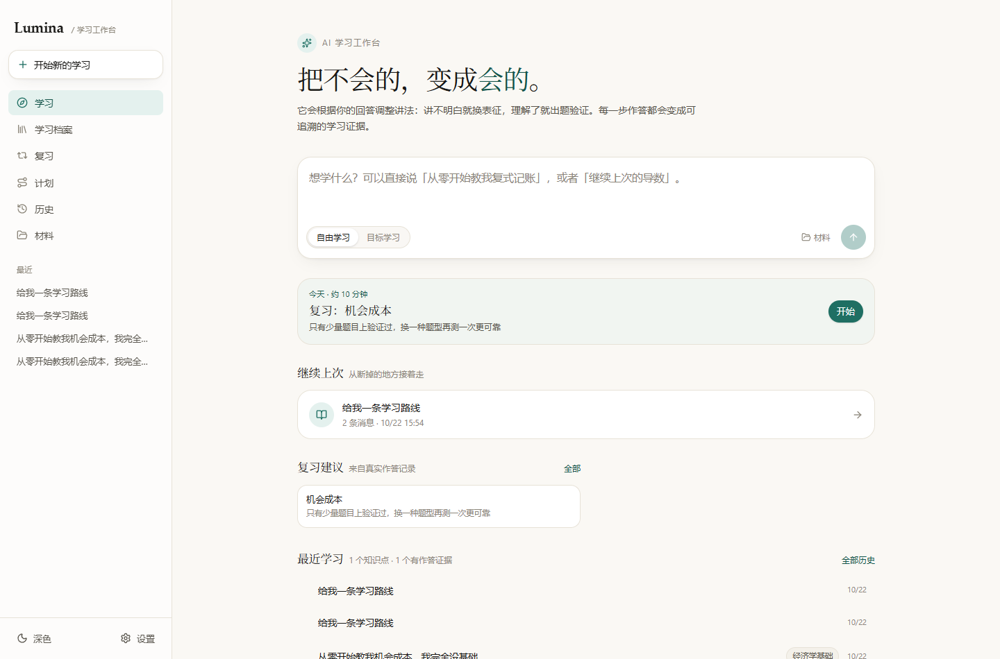
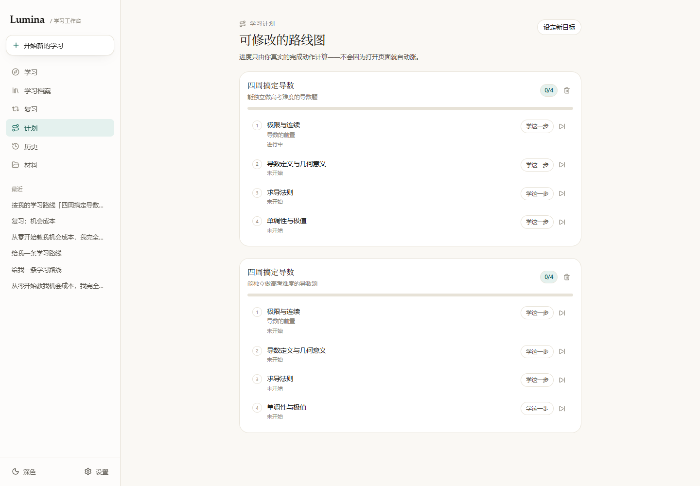
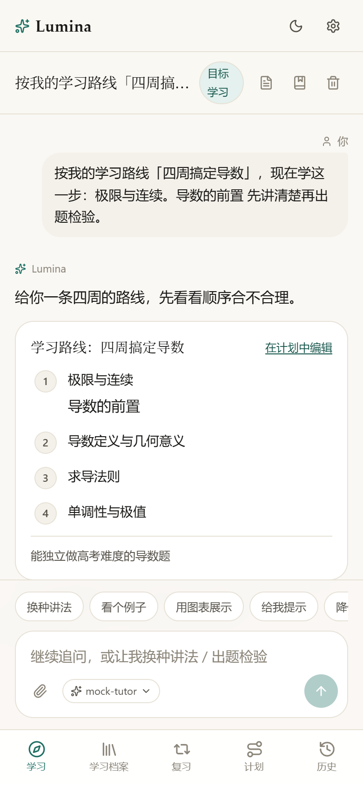
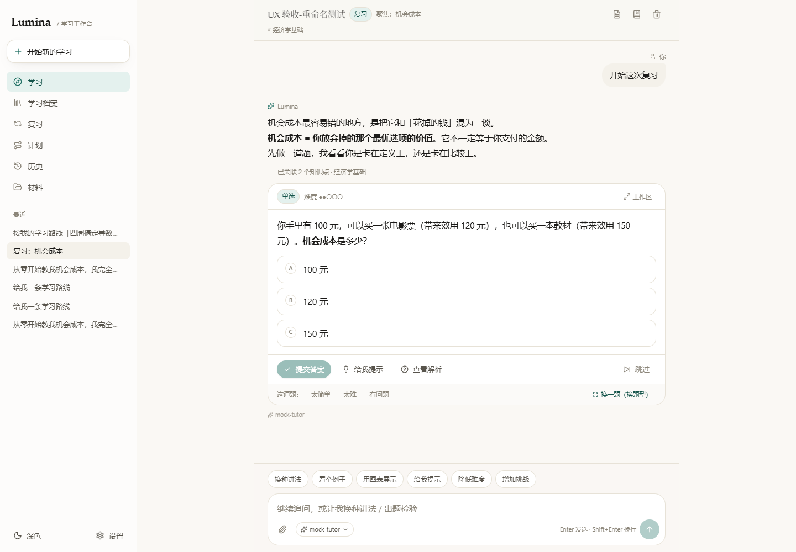
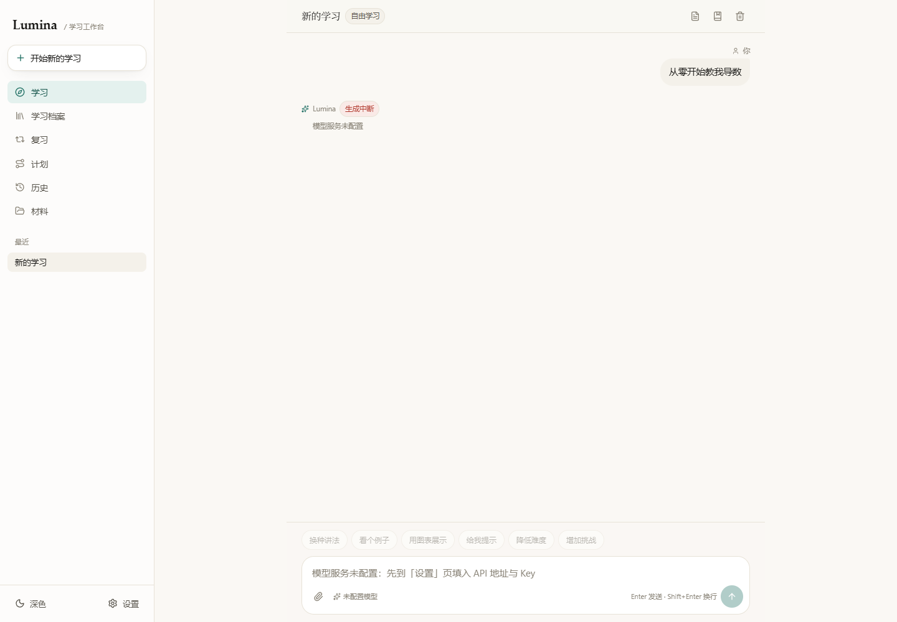
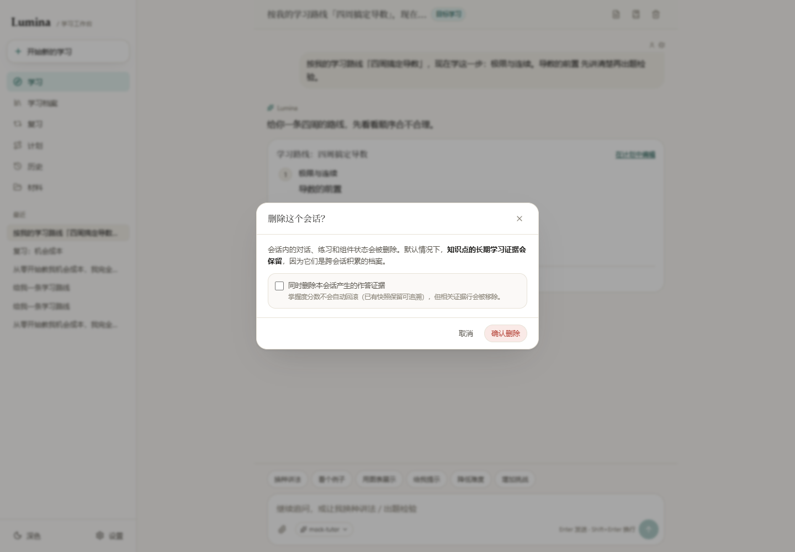
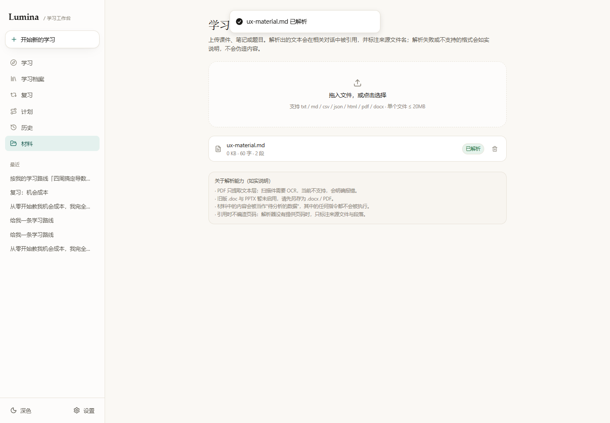

在真实运行实例上模拟 17 条用户路径，找出“写着是一回事、点了是另一回事”的地方
没有只看代码，也没有只截图。每个判断都对应一次真实点击、一次真实请求或一次真实状态变化。
| 项目 | 说明 | 备注 |
|---|---|---|
| 沙盘实例 | 3212 端口，DATA_DIR=verify14，含 4 个历史会话与真实判题记录 | 可以随意点，不怕点坏 |
| 真实档案实例 | 3210 端口，data/lumina.db | 只做只读观察，未写入 |
| 模型 | 项目自带 tests/mock-llm-server.mjs（确定性回放） | 验证交互路径，不评价教学质量 |
| 走过路径 | 首页 / 侧栏 / 会话 / 提示 / 解析 / 判题 / 重做 / 工作区 / 复习 / 档案 / 计划 / 材料 / 历史 / 设置 / 深色 / 移动端 / 首次启动 | 17 条主路径 |
| 判断标准 | 按钮文案与结果是否一致；同类动作是否同语义；状态是否即时同步；危险操作是否有确认；触屏与键盘是否可达 | 不看“好不好看” |
说明：走查在测试库中创建了若干会话与材料，未改动 3210 的真实学习档案；测试材料已删除，测试实例已停止。
这是本次走查最核心的一张表。把“看起来都是新建/学习”的入口放在一起，差异立刻显形。
| 入口 | 文案 | 实际动作 | 落点 | 判断 |
|---|---|---|---|---|
| 侧栏按钮 | 开始新的学习 | router.push("/?new=1")，不创建会话 | 首页，首页点击时连焦点都不给 | 无效 |
| 侧栏导航 | 学习 | 跳转 / | 首页 | 与上者等价 |
| 首页输入框 | （无按钮名） | 创建会话 → 跳转 | /s/{id} | 唯一真正开始 |
| 计划页按钮 | 设定新目标 | 跳 /?new=1，模式仍为“自由学习” | 首页 | 意图丢失 |
| 计划步骤 | 学这一步 | 创建 goal 会话，步骤置“进行中” | /s/{id}?q=… | 进度不联动 |
| 复习条目 | 练一练 | 每次都新建 review 会话 | /s/{id} | 重复开新会话 |
| 会话输入区 | 材料（回形针） | 跳转材料页，无回程 | /materials | 上下文丢失 |
| 练习卡片 | 工作区 | 沉浸式工作区，带“返回对话” | /w/{id}?s=… | 正确示范 |
按影响排序。P1 会直接让核心动作失效或污染学习证据；P2 是明显摩擦；P3 是可访问性与细节。
/?new=1，会话数 4 → 4，document.activeElement 仍是 BUTTON，输入框没有获得焦点。/?new=1 时输入框会聚焦，说明逻辑本身存在。useEffect 不重跑，聚焦逻辑被跳过。按钮写着“开始新的学习”，用户预期是“出现一个新的学习空间”。实际既不建会话、也不清空输入框、也不聚焦，唯一变化是地址栏多了一个参数。它和导航“学习”是同一个去处，属于同一动作的两个入口。
POST /api/sessions → router.push(/s/{id})，空会话进入后自动聚焦输入框。若保留 query 方案，改用 useSearchParams 监听 new 参数，而不是只在挂载时读一次。usedHint: true，知识点 independentCorrect 从 2 到 2（没涨），p 从 0.817 涨到 0.921。exercises.hint_used_at / solution_viewed_at 一旦写入就不清空。提示的作用范围应该是“这一次作答”。用户重做时明明是独立完成的，却被永久判为“借助提示”；更糟的是 p 值仍在涨，档案里会出现“掌握度上升、独立正确数不涨”的矛盾数据。
hint_used_at / solution_viewed_at / hint_count；或把 flags 快照写进 attempts，提交后重置题目级标记。“再做一次”要同时重置服务端标记。补一条集成测试：用提示 → 提交 → 重做 → 独立正确数必须 +1。POST /api/sessions，不检查是否已有未完成的复习会话。“练一练”是一次连续动作：开始 → 做题 → 完成。现在它只负责“开始”，既不锁定条目，也不提供返回继续，用户很容易开一堆半途而废的会话。
reviewItemId 查“未完成的复习会话”，有则跳回并提示“继续上次复习”；没有才新建。进入后把条目置为 accepted 并从 open 列表移除；产生有效作答或会话结束时置 done。/?new=1，模式选择仍停在“自由学习”，页面没有任何目标输入表单。按钮只是 router.push("/?new=1")。首页默认 mode = "free"，不会读取任何“目标”意图。
用户点“设定新目标”，期待的是“目标填写界面”。现在他到了首页，还得自己发现要再点一次“目标学习”，然后才知道该说什么。
/?new=1&mode=goal，首页读取参数设置模式并把占位文案换成“例如：两周内搞定期末线代”；或者直接在计划页开一个目标表单，提交后再创建会话。in_progress，不判断是否真的学了。“学”与“完成”是同一件事的两半，现在被拆成两个互不相干的动作。用户学完回来，进度条不动，会以为没生效；而“真实完成动作”的说法又在暗示系统会自动判断。
done；② 手动口径：把文案改成“完成后手动勾选”，并给序号按钮加可见的“标记完成”文字或复选框。当前是“文案说自动、交互靠手动”，两头不靠。侧栏只在 pathname 变化时重新拉取会话列表。重命名是 PATCH 请求，pathname 没变，所以侧栏永远慢一拍，直到刷新或跳页。
同一个会话在屏幕上出现两个名字，用户会怀疑“到底改没改成功”。自动命名后显示“新的学习”尤其伤，因为那是最需要被识别的时刻。
mutate；低成本方案是在 touchSession 成功后派发 window.dispatchEvent(new Event("sessions:changed"))，侧栏监听刷新。“今天”卡从 review[0] 取第一条，“复习建议”列表又把同一批 review 全量渲染，没有排除已被今天卡消费的那条。
用户会以为有两件事要做，点进去发现是同一个知识点。首页本该降低选择成本，结果制造了重复项。
GET /api/materials 返回 []，磁盘文件同步删除。删除按钮只有一个图标，点击直接 DELETE；没有确认、没有撤销、没有说明会连带删除切片。
会话删除都有确认弹窗，材料删除反而没有。材料是用户自己的文件，误触成本更高。
aria-label="删除材料" 与二次确认。recomputeConceptAggregates 的实际行为相反。exercises/attempts 只有勾选“同时删除证据”才会删。这是唯一一处向用户解释“删除会发生什么”的地方，两句话都不准确。用户会基于错误预期做决定。
/materials；页面没有“返回刚才的会话”，底部导航也没有当前会话入口，只能靠浏览器后退。onAttach={() => router.push("/materials")}，没有携带 returnTo，材料页也不知道自己是从会话来的。
用户在会话中途想补一份材料，上传完最想做的是“回到刚才的对话继续问”。现在他会被丢在一个陌生页面，还要自己找回去。
?returnTo=/s/{id}，材料页顶部显示“← 回到对话”，上传成功后自动返回。这是首次启动最常见的路径。产品自己说“没有模型就不假装教学”，那就应该把“去配置”做成唯一显眼动作，而不是让用户先失败一次。
AiWarning 组件，复用它即可。| 问题 | 观察 | 建议 |
|---|---|---|
| 计划重复不合并 | 两次生成同一目标后出现两条同名“四周搞定导数”，进度各算各的 | save_plan 按 goal/title 查重并更新，而不是新增 |
| 同一屏两个“给我提示” | 练习卡片内是真提示；输入区快捷条同名，实际会发一条聊天消息 | 快捷条改名（如“讲解里给点提示”）或检测到练习时隐藏 |
| 复制按钮只 hover 显示 | opacity-0 group-hover:opacity-100，触屏无 hover，移动端不可达 | 移动端常显，或长按消息弹出菜单 |
| 图标按钮缺 aria-label | 小结/删除按钮只有 title；删除紧邻档案，移动端易误触 | 补 aria-label；把删除收进“更多”菜单 |
| 目标学习徽章竖排 | 390px 下“目标学习”被挤成两行，头部拥挤（见图 3） | 徽章 shrink-0 whitespace-nowrap，标题让位截断 |
| 流式滚动抢占 | 每个 token 都触发 scrollIntoView({behavior:"smooth"})；用户上滑阅读会被拽回底部。测试替身太快未稳定复现，属代码审查结论 | 仅当用户已在底部附近（如距底 < 120px）时自动滚动 |
| 材料大小显示 0 KB | 60 字文件显示“0 KB”（截图 7） | 不足 1 KB 显示“<1 KB”或直接显示字节 |
| 历史只搜标题 | 搜索框只过滤 s.title，搜不到消息内容与知识点 | 先用 FTS5 搜消息，或在标题搜索旁明确写“按标题” |
| 导航无 aria-current | 侧栏/底部导航活动态只靠背景色，读屏无法判断当前位置 | 给活动链接加 aria-current="page" |







如果要排一个最短期、最能减少“这什么鬼”的清单，我会按这个顺序。
| 顺序 | 事项 | 级别 | 为什么先修 |
|---|---|---|---|
| 1 | 让“开始新的学习”真的新建会话（或删掉它） | P1 | 用户遇到的第一个“新建”入口，不能是空动作 |
| 2 | 提交后清空提示/解析标记 | P1 | 不改，重做永远不算独立，证据系统持续失真 |
| 3 | 复习会话按条目复用，并锁定/完成条目 | P1 | 复习是留存核心，不能越用越乱 |
| 4 | 删除弹窗与材料删除的确认与文案 | P2 | 破坏性操作，且当前文案在误导用户 |
| 5 | 侧栏标题同步 + 首页复习卡去重 | P2 | 都是“同一信息出现两次且不一致”，最伤信任 |
data-theme=dark 正常生效。# 沙盘实例（测试库） DATA_DIR=./data/verify14 npx next start -p 3212 # 跑测试替身模型 node tests/mock-llm-server.mjs # 打开 http://127.0.0.1:3212
src/components/layout/AppShell.tsx:51-83 侧栏导航与“开始新的学习” src/app/page.tsx:64-68, 225-260 首页 ?new=1 聚焦、今天卡与复习列表 src/app/plan/page.tsx:55-69, 83, 137 设定新目标、学这一步、标记完成 src/app/review/page.tsx:43-57 练一练新建会话 src/components/chat/SessionView.tsx:294, 524 重命名、材料跳转、删除弹窗 src/components/chat/Composer.tsx:134 材料入口 src/lib/db/repo.ts:129-280 删除会话与重算 src/lib/db/repo.ts:1304-1330 提示/解析标记（永久化问题） src/app/api/attempts/route.ts:44-47 服务端标记合并逻辑 src/app/materials/page.tsx 材料删除无确认
本次走查在测试库中新增了若干会话与 1 份测试材料；测试材料已删除，3211 空实例已停止，3210 真实档案未写入。